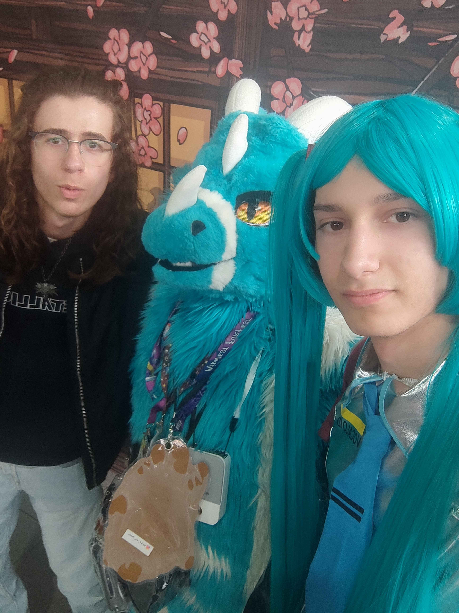

Mais quoi ?? Notre cher Ptolémée serait en faite Miku ?!

Et oui, vous n'entendez pas mal, c'est bel et bien la vérité.
Notre très chère nouvelle Miku aurait été aperçue à la Geek Fest de Angers, le 11 avril dernier, aux côtés de notre cher Valentin.
Bravo à notre chère Miku pour cette incroyable révélation, on savait que tu étais une diva mais là tu nous as tous surpris !
Oui la photo est devenue verte à cause des filtres trop cute qu'on a mis dessus.